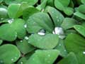
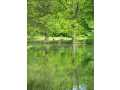
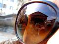

fotogalerija
.:. mjesta .:. priroda .:. život .:. događaji .:. panorame .:.
mjesta
- plavi sat
- sv. jakov u boji
 izbacili ga iz groba
izbacili ga iz groba beskonačnost
beskonačnost još jedan dan...
još jedan dan...- sunce u fontani
 mali
mali- kava u forumu
 nocturno
nocturno- lotrščak
 vestibul
vestibul- tajne arhitekture
- stari gradić, nova godina
- lipo je počela
 bonaca
bonaca crna mačka
crna mačka- fontana
- funestra
 bodljikava žica
bodljikava žica napušteni mlin
napušteni mlin- suton u turnju
 volat
volat- prid neveru
 izbacili ga iz groba
izbacili ga iz groba beskonačnost
beskonačnost još jedan dan...
još jedan dan... mali
mali nocturno
nocturno vestibul
vestibul bonaca
bonaca crna mačka
crna mačka bodljikava žica
bodljikava žica napušteni mlin
napušteni mlin volat
volatpriroda
- promašaj
- proljeće na valentinovo
 sa vrha na dnu otoka
sa vrha na dnu otoka kornatska idila
kornatska idila još čekamo bracu
još čekamo bracu školjka
školjka dodir seksa
dodir seksa- maslačak 2
 krhko
krhko- lastavići
 kajman u zagrebu
kajman u zagrebu bundek
bundek- pogledaj u moje oči
 daj griz
daj griz- nježniji od plišane igračke?
- zalazak na ćakulonovon mulu
 sunčanje u dvoje
sunčanje u dvoje maslačak
maslačak faca
faca-  poslije kiše
- listopad
 sa vrha na dnu otoka
sa vrha na dnu otoka kornatska idila
kornatska idila još čekamo bracu
još čekamo bracu školjka
školjka dodir seksa
dodir seksa krhko
krhko kajman u zagrebu
kajman u zagrebu bundek
bundek daj griz
daj griz sunčanje u dvoje
sunčanje u dvoje maslačak
maslačak faca
facaživot
 poza
poza- dobro jutro, grga
- brodovi su isti ka i ljudi...
- ...zlu moru daju život svoj
- bita
- rasute grile
 gitara
gitara kurs sjeverozapad
kurs sjeverozapad in medias res!
in medias res!- igra s vatrom
- trešeta
 ljubavna priča
ljubavna priča ovisi o perspektivi
ovisi o perspektivi prošlo svršeno vrijeme
prošlo svršeno vrijeme-  opusti se i uživaj
- prova
- remont
 starac i more
starac i more- tiramoli vežu kale
 poza
poza gitara
gitara kurs sjeverozapad
kurs sjeverozapad in medias res!
in medias res! ljubavna priča
ljubavna priča ovisi o perspektivi
ovisi o perspektivi prošlo svršeno vrijeme
prošlo svršeno vrijeme starac i more
starac i moredogađaji
- ljut
- odlomak koloseuma
- vrijeme prolazi
 fontana di trevi
fontana di trevi panteon
panteon-  pogled na panteon
 knocking on heaven's door
knocking on heaven's door- oculus
- boca della verita
 forvm romanum
forvm romanum- prozor
- budnica
- tovareća mužika
- krug evolucije
 daimler benz
daimler benz dolac
dolac- indijanci
- nocturno za zdenka
 fontana di trevi
fontana di trevi panteon
panteon knocking on heaven's door
knocking on heaven's door forvm romanum
forvm romanum daimler benz
daimler benz dolac
dolac panorama turnja
panorama turnja trogirska riva
trogirska riva{kind=link}
{kind=link}
{kind=link}
{kind=link}
{kind=link}
{kind=link}
{kind=link}
{kind=link}
{kind=link}
{kind=link}
{kind=link}
{kind=link}
{kind=link}
{kind=link}
{kind=link}
{kind=link}
{kind=link}
{kind=link}
{kind=link}
{kind=link}
{kind=link}
{kind=link}
{kind=link}
{kind=link}
{kind=link}
{kind=link}
{kind=link}
{kind=link}
{kind=link}
{kind=link}
{kind=link}
{kind=link}
{kind=link}
{kind=link}
{kind=link}
{kind=link}
{kind=link}
{kind=link}
{kind=link}
{kind=link}
{kind=link}
{kind=link}
{kind=link}
{kind=link}
{kind=link}
{kind=link}
{kind=link}
{kind=link}